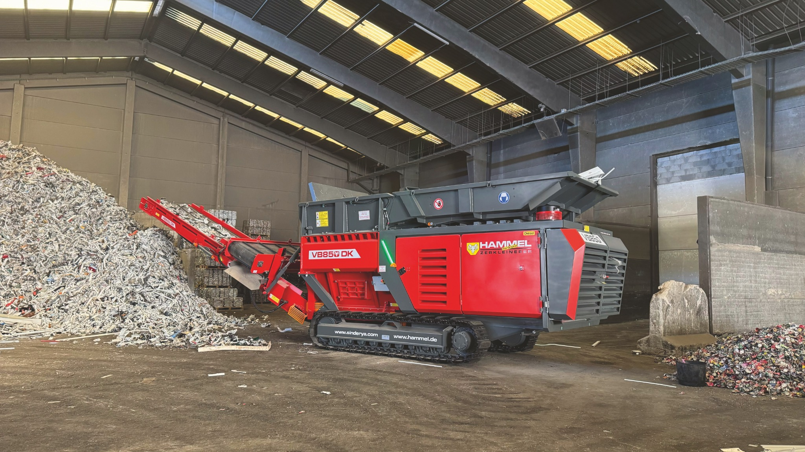

1996 · DER ANFANG
ALLES BEGINNT
ALLES BEGINNT
MIT DREI MENSCHEN
Am 15. Februar 1996 gründen wir HAMMEL in Bad Salzungen mit drei Mitarbeitern und einer kleinen Produktionshalle. Von Anfang an verfolgen wir ein klares Ziel: Recyclingtechnik entwickeln, die sich im täglichen Einsatz bewährt. Schon bald reicht der Platz für unsere Ideen nicht mehr aus.
